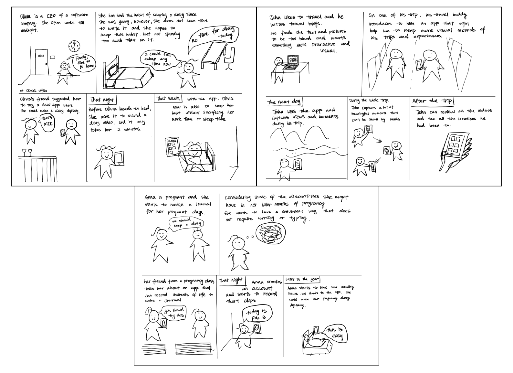
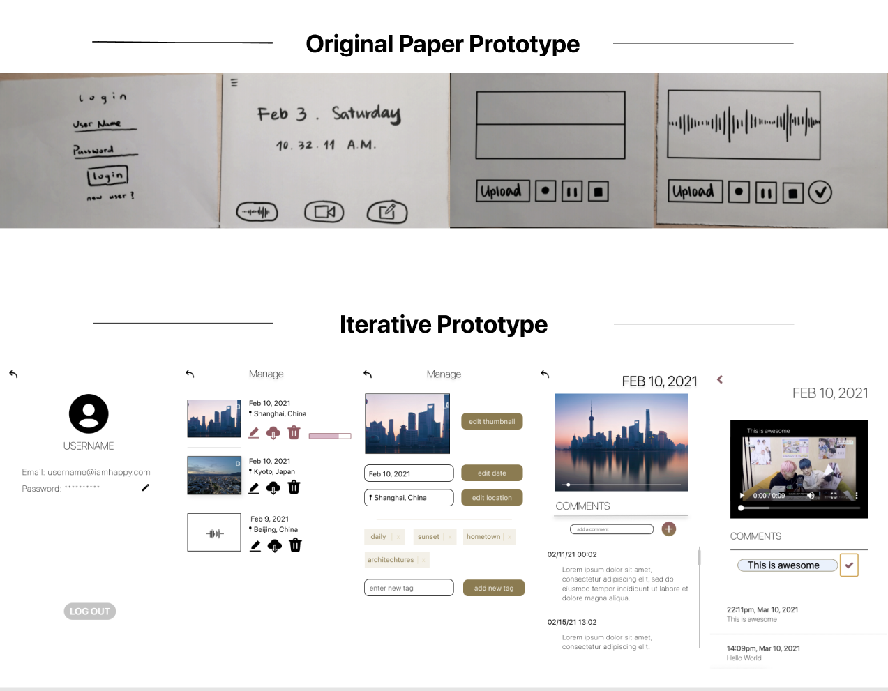
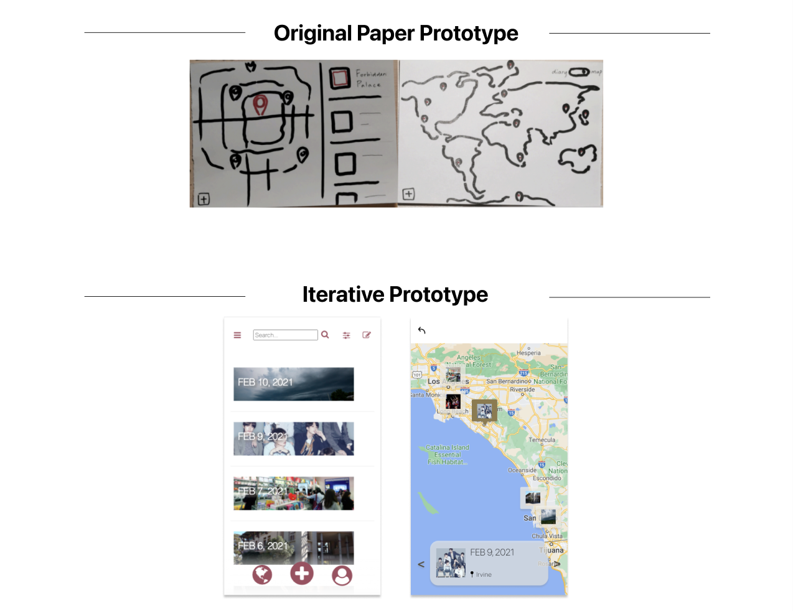
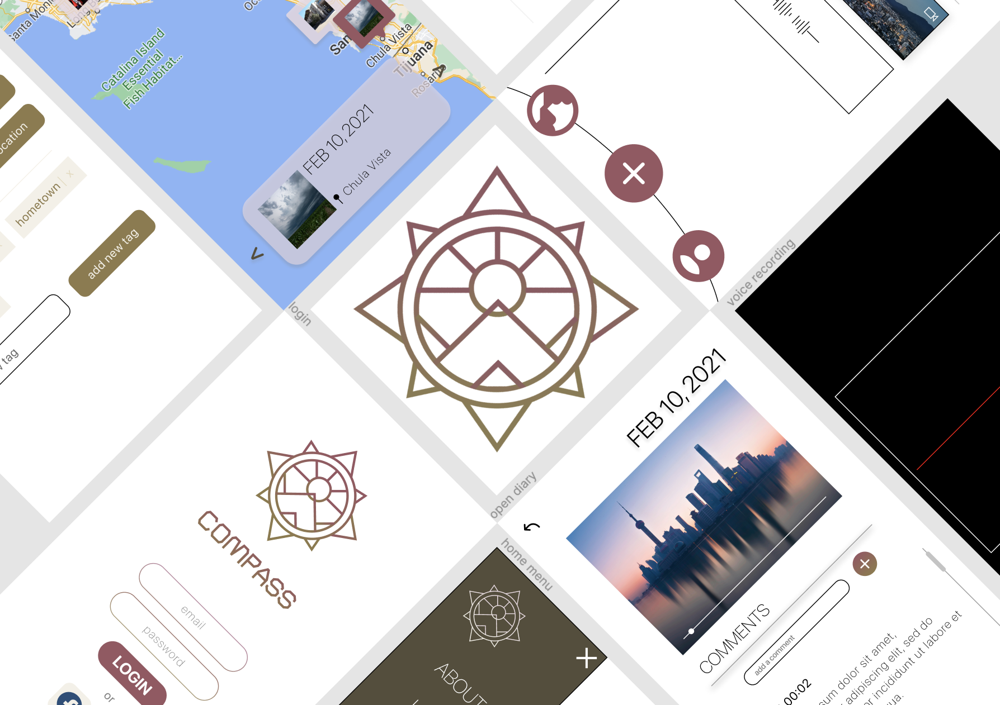

Intro
Writing diaries is a good habit. It is different from posts in social media platforms. One is for ourselves, the other one is for the public. We never showoff or fake in our diaries. Therefore, diaries reveal our true self. When college students write down our thoughts and feelings each day, we could refresh our mind and rethink about our past decisions. It is a good way to keep track of ourselves but it is hard to persist. We could face difficulties and dilemma writing diaries. We might not have a fix time period to write diary everyday or we could simply forget to do so. Some days we have a lot to say but other time we just have nothing to write about. Writing is one way of recording but photos audio recording maybe a better way for many moments… Gradually, we just give up continuing diaries everyday.
Brainstorming
Our story about the vlog app starts from a discussion about how long have we been from the last diary writing. The last time I wrote my diary was at my 7th grade. It is hard to continue the diary writing and especially when we start college and social life. But when look back to my works at 7th grade, they are very healing and relieving. Many people including my team love diary writing but not able to continue over time. How can we help to resolve this situation? We found that if we could make the diary easier to write, to preserve, and to review, the user may be more willing to keep the diary habit. We think a web app can be helpful.
User Testing & Iterations
 credit: Euphie Zhao With the help of classmates in COGS120, we collected some user testing result. Using the feedbacks we made some changes from our original prototype. Firstly, we have our login page and video page done. like the photo on the left.
Logistically, we can see a big change with the scale and the screen size. We switched the platform from desktop to mobile devices. We believe that a diary app should prioritize mobile compatibility than other devices.
The first goal is to look for an easier way to record our feeling. A lot of people do not like write things but speak it out. So we think that a good method to do diary is through video or audio recording. Each rather than 30 mins of writing and organizing, we can just record our feelings and thoughts for 5 mins and be done with the day. We want to use this way to give everyone a feeling that diary is not hard to keep up with rather a lifestyle.
 credit: Euphie Zhao Besides the simple recording, we also added filter, comment and editing. We believe that our diary app should support review function. While learning about the pain points for this project, we learnt that a lot of people are not willing to use diaries because they think it is hard to keep this habit. People do not have time to write diaries everyday for just personal reasons. Therefore, our app should not just limited to write and read the past diaries, but more about interact with the past self. To imitate such environment of interacting with oneself, we are looking for building a conversation along the time line. We know that time cannot flow back, but our message could deliver forward to the future. Therefore, we developed commenting part to deliver forward the message. Not just one day, a good conversation about diaries could inspire people over a long period of time.
Moreover, we also explored more functions like map. (world mode) These can help this app to form a sense of community. Although this functio is still developing, we believe it is still necessary in future versions.
Review
Overall, we should achieve these expectation with Compass:
- Easier to write
Instead of writing, user could take video or audio as an easier way of recording
- Long preservation
The traditional diary is on notebooks. These are paper and one-copy only. We could make them digital and connect to server and tore in the cloud. In this way, the user will never need to worry about losing data. They can view their diaries from years before.
- Review experience
During the old days, review for their is just flipping the notebooks. Everytime is the same material but still refreshing and exciting. However, the words on the paper will ever change or be added on, because we do not want they to be changed or erased. However, we might want to leave some comments each time we see them. We can open up a review mode for each diaries. When we review, we do not change the diary itself rather add comments on them. We can see the comment from 5 years ago or even 10 years ago.
Demo
Future
Moreover, while developing these ideas above, we also find that we can make the app more personalized and private.
Private mode default:
- We still have a community that functions as social medias.
- But not like social media, we will set all the diaries private as default.
- Which means if the user want to participate in the community, they can set them public, otherwise, they can keep them just private.
Personalized video recording and editing
- We will have options for users to edit videos inside the app. They can edit their videos in their ways and have fun with them.
Looking back to this project, we want to discover more methods to create a private, warm environment to write diaries. A feeling that differentiate from an efficiency tool but more like a space talking to ourselves.
